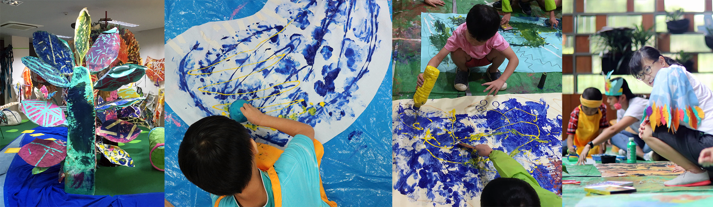
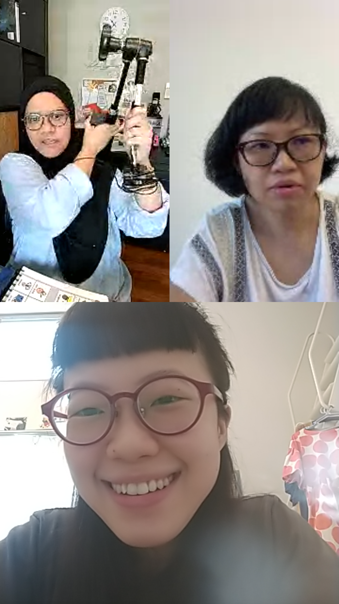
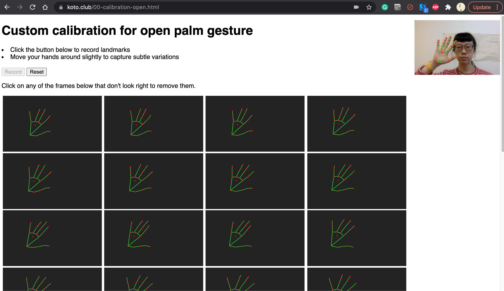

How it started
Having had the opportunity to engage with children from Rainbow Centre Singapore as artists-in-residence in the Peekaboo! Inclusive Arts Festival by SuperHero Me in 2018, both Fong Yee and myself witnessed first-hand how various assistive technological devices that were being used by the children in school could be incredibly limiting and painfully non-intuitive, especially when it comes to self-expression. With technology being omnipresent in our everyday lives, it was hard for us to imagine that better, more creative alternatives for these children to express themselves were not available to them.
The experience prompted us to look into tech to enable self-expression through alternative means. We believe in the use of technology as an enabler of self-expression and meaningful interactions. Whilst numerous technologically innovative tools exist within the machine learning and programming community, they often feel ‘out of reach’ and seem ‘too complex’ for anyone to ‘install and make use of’. There seems to be an implicit assumption by developers of the tools that the people who are and will be using them have a similar level of knowledge and understanding in how to use them, which is not always the case. This inspired us to build tools from a ground up level that are enabling via its simplicity rather than disabling through its complexity.
We had hoped to run hands-on experience sessions for participants to experiment with the prototypes during the developmental stage of the project, and have our work process be guided by the childrens’ interactions and responses with the tools. Due to the Covid-19 situation over the course of the project's timeline, we were unable to actualise this. That said, we are extremely grateful to have been able to converse with numerous people who interact daily with children with special needs, all of whom have been very forthcoming and open in sharing about their experiences as well as giving us feedback on our work-in-progress.
We wholeheartedly wish to thank the following persons:
Mdm Hidayah and Rizq, Ms Joyce Teo, Ms Michelle Cheong, Ms Elizabeth Quek, Mr Tan Chuan Hoh, Ms Saxena Chandhok Tanushree, Ms Sarah Yong, Mr Tan Yeok Nguan, Ms Evelyn Ang, Mr Alvin Tan, Ms Elaine Ng, and Ms Chen Weiyan
One of the key take-aways from every conversation is the lack of peer-to-peer interaction and communication in the daily lives of the children with special needs, especially if they are non-verbal. Other important considerations include: bulkiness of devices, the difficulty and cost of integrating it into daily life activities, language ability, any motor skill ability which could affect the way each individual is able (or not) to make use of existing technology to communicate their thoughts and needs/wants.

Screenshot of Mdm Hidayah demonstrating to us the bulkiness of an attachment device for attaching a switch
Image credit: Ng FongYee
In publishing this website, we hope that these tools can become a starting point for more people to ‘say’ something, to express themselves in a way that gives them a ‘voice’.
Process: Gesture drawing
Screenshot of one of our numerous zoom meetings as we were based in Singapore and Tokyo.
Image credit: Ng FongYee


Discussion points on needs, senses, body movements and types of technology to consider
Image credit: Chan Li Ping
We were very much inspired by Experiments with Google projects such as Look to Speak, TensorFlow Lite for Microcontrollers, and Body Synth amongst others. This led to early experiments with soft switches made from conductive yarn, microcontrollers and using external devices such as the LeapMotion together with Touch Designer to detect gesture and movement, translating that into moving an object on screen, or making a drawing.


Experimenting with soft switches
Image credit: Chan Li Ping
After we had the chance to speak with educators, caregivers and others working with people with special needs, we realised that it made sense to focus on using technology available on existing consumer devices (such as computers with built-in webcams). The decision to avoid using new hardware to create our tools was so that it would reduce the barrier to entry for anyone to try out the tools. Think less bulk, intuitive features, and a tool that does not require cumbersome switches or add-on devices. With this in mind, we felt that it made sense to use webcam hand-tracking as and interface for our drawing tool.
Since the range of mobility that each child has is unique, we decided to include an option for gesture calibration in the early stages of our prototype testing. Not limiting it to a fixed gesture (i.e an open palm and closed fist) allowed for customisation, and the child can choose whichever 2 gestures they are comfortable with to create their drawing.

Screenshot of early hand gesture calibration test
Image credit: Ng FongYee
We imagine that there can be many applications of this hand gesture interface, making a drawing is merely the beginning of a mode of communication/expression. With different outputs, this could be an alternative to a touchscreen cursor (many children with limited hand mobility also have difficulties using a touchscreen), a switch controller, or a custom physiotherapy experience etc